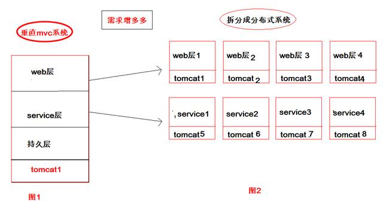
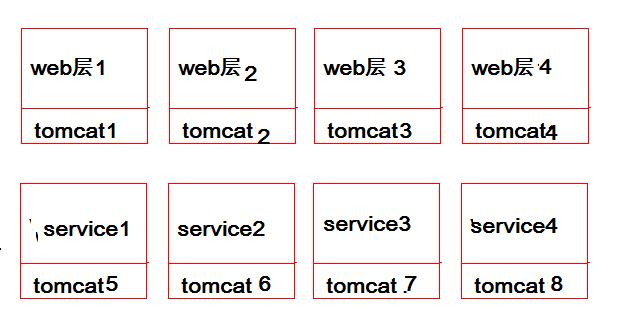
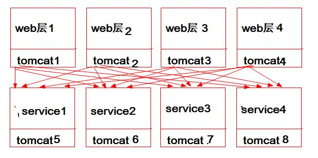
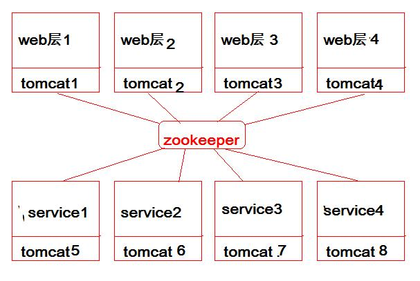

dubbo是什么
是一个Jar包，一个分布式框架，一个远程服务调用的分布式框架。 为什么要分布式？为什么要远程调用？ 
以前是单服务应用，调用方法在服务内直接调用即可。 现在拆分成多个服务，controller和service不在一个服务里了，controller不能直接调用service的方法了。那只能远程调用了，dubbo就可以解决这个问题。
使用Dubbo的好处
- 透明化的远程方法调用，就像调用本地方法一样调用远程方法，只需简单配置，没有任何API侵入。
- 负载均衡及容错机制，可在内网替代F5等硬件负载均衡器，降低成本，减少单点。
- 服务自动注册与发现，不再需要写死服务提供方地址，注册中心基于接口名查询服务提供者的IP地址，并且能够平滑添加或删除服务提供者。
- Dubbo采用全Spring配置方式，透明化接入应用，对应用没有任何API侵入，只需用Spring加载Dubbo的配置即可，Dubbo基于Spring的Schema扩展进行加载。
角色说明： Provider（生产者）: 暴露服务的服务提供方。 Consumer（消费者）: 调用远程服务的服务消费方。 如图，我们可以简单理解为web1234需要调用service1234的服务，所以web1234是消费者，service1234是生产者。 
如果按照上面的逻辑，消费者调用生产者的服务，那是否像下面这样调用：  太乱了， 肯定不是这样。
此时引出注册中心的概念： 服务注册与发现的注册中心。 注册中心有很多，现在只简单说zookeeper。 zookeeper是用于分布式中一致性处理的框架。 简单的讲，zookeeper就是个中介，卖楼的（生产者）把楼盘信息放在中介（注册中心）那里，想买楼的（消费者）去中介那里获得楼盘资源清单。于是，我们的图变成了这样： 
Monitor：统计服务的调用次调和调用时间的监控中心。 Container：服务运行的容器。
总体结构如下（官方的图）：

上图的运行流程如下： 0. 服务容器负责启动，加载，运行服务提供者。
- 服务提供者（生产者）在启动时，向注册中心注册自己提供的服务。
- 服务消费者在启动时，向注册中心订阅自己所需的服务。
- 注册中心返回服务提供者地址列表给消费者，如果有变更，注册中心将基于长连接推送变更数据给消费者。
- 服务消费者，从提供者地址列表中，基于软负载均衡算法，选一台提供者进行调用，如果调用失败，再选另一台调用。
- 服务消费者和提供者，在内存中累计调用次数和调用时间，定时每分钟发送一次统计数据到监控中心。
dubbo控制台
- 下载代码:
git clone https://github.com/apache/dubbo-admin.git - 在dubbo-admin-server/src/main/resources/application.properties中指定注册中心地址
- 构建
mvn clean package - 启动
mvn --projects dubbo-admin-server spring-boot:run或cd dubbo-admin-distribution/target; java -jar dubbo-admin-0.1.jar - 访问
http://localhost:8080
修改访问端口：
vim dubbo-admin\dubbo-admin-server\src\main\resources\application.properties
在任意位置添加：
server.port=9000
目前新版buddo-admin还没有用户名密码访问功能。\
老版控制台
github
将项目整体下载，解压并进入到dubbo-admin
打包mvn package -Dmaven.skip.test=true
进入target，找到打好的war包，复制到tomcat的webapps下，并更名为ROOT.war
启动tomcat，启动完了再停止(这一步是要通过tomcat将war包解开。)
进入到webapps\dubbo-admin-2.6.0\WEB-INF，修改dubbo.properties
|
|
修改你的zookeeper地址。 修改你的用户名和密码，需要注意用户名在=号前边，等号后边的是密码。 然后再启动tomcat，访问即可。
超时与重试
在provider和consumer端，都提供了超时(timeout)和重试(retries)的参数配置。
timeout默认值为1000，单位毫秒，表示超时时间是1秒；
retries默认值为2，表示重试2次，加上本身调用1次，一共有3次调用。
在org.apache.dubbo.common.Constants类可以找到：
public static final int DEFAULT_TIMEOUT = 1000;
public static final int DEFAULT_RETRIES = 2;
consumer端配置优先于provider端配置。
总结： case 1： 默认情况，provider和consumer端的timeout和retires均不设置，使用默认值 在不设置timeout和retries的时候，如果provider端接口一直出现超时，provider端会调用3次，而日志中没有任何警告或错误信息； consumer端虽然重试了2次，加本身调用的1次，一共发起3次调用，如果provider3次全部超时，consumer端会打印超时异常信息； provider端日志中没有任何警告或错误信息不利于发现问题；前面的调用并未终止，如果是非查询类接口且接口没有实现幂等性时，可能产生重复数据。
case 2： provider端retries=0，consumer端不设置 在provider端设置retries=0已经生效，接口仅调用了1次。
case 3： provider端retries=0，consumer端retries=1 consumer的retries优先级较高，两端都设置的情况下，以consumer端的retries为准。
case 4： provider端timeout=3000, retries=0，consumer端retries=0 provider端设置timeout已生效。
case 5： provider端timeout=1000, retries=0，consumer端retries=0 provider端设置了timeout，如果接口调用超时，provider会打印WRAN信息。
case 6： provider端timeout=1000, retries=0，consumer端timeout=3000, retries=0 consumer的timeout优先级较高，两端都设置的情况下，以consumer端的timeout为准。
参考dubbo官网的文档，并结合工作中项目实践，对超时和重试这2个参数做个总结：
- 超时(timeout)默认1000毫秒，重试(retries)默认2次(即一共调用3次)；
- provider端在dubbo:service中配置，consumer端在dubbo:reference中配置，consumer端的配置会覆盖provider配置；
- 超时(timeout)建议在provider端配置，因为作为提供方，它更清楚自己接口的耗时情况，并且provider端设置了timeout，在日志中有TimeoutFilter的WARN信息；
- 在provider端一般接口timeout设置为5秒或者10秒，如果是复杂查询、导出报表、调用第三方接口、本身是最上游的接口等，根据情况考虑设置大一点；
- 在consumer端配置设置timeout会覆盖provider设置，但有时设置timeout能够让consumer快速失败，而不因为下游provider服务接口的问题拖垮consumer本身；
- retries建议在provider端设置为0，consumer根据情况也可以设置为0，因为重试可能因非幂等性原因导致重复数据，并且超时情况即便重试成功consumer端可能也收不到成功响应；
dubbo报错
com.alibaba.com.caucho.hessian.io.HessianProtocolException: ‘xxx’ could not be instantiated
Hessian反序列化时，使用反射调用构造函数生成对象时，传入的参数不合法，造成了上面的异常。 知道了原因，解决的方法也很简单，就是添加了一个无参的构造器给CountObject，于是上面的问题就解决了。
|
|
https://hittyt.iteye.com/blog/1691772
Tried 3 times of the providers
意思是服务端被重复调用三次，然而provider并没有报错。 我觉得是provider的响应时间问题，就是说consumer等待provider默认是有时间限制的(默认1000ms)，即如果1秒内provider没有响应，就会再次调用。 如果三次调用都在1秒内没有响应，就是调用失败，会报上边的错误。这时加上timeout配置即可：
|
|